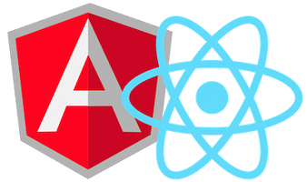

Migrando de Angular 1 a React y a Angular 2!?
@glomenar

Roberto Aranda
-
Lead Developer en Sequel Business Solutions
- SQL
- Backend
- Front end apasionado
- 10+ años desarrollando software
@glomenar
ese.rober@gmail.com
Agenda
- Angular 1
- React
- Angular 2
AngularJS 1
- Superheroic JavaScript MVVM Framework
- Creado por Google es uno de los frameworks de JavaScript más usados
- Tiene todo lo necesario para crear una Single Page Application
- Usa un event loop conocido como $digest loop para aplicar cambios
React
- A JavaScript library for building user interfaces
- Creado por Facebook es una apuesta segura estos días
- Declarativo y basado en Componentes
- Usa el concepto de Virtual DOM para minimizar el rendering
Javascript Fatigue
Saul: “How’s it going?”
Me: “Fatigued.”
Saul: “Family?”
Me: “No, Javascript.”
create-react-app
Paquete NodeJs para crear aplicaciones con React,
incluye el transpilador, bundler, hot-realoading, server, etc. con
Zero Configuration
AngularJS 2
- One framework
- Creado por Google no es una evolución de Angular 1 sino una re-escritura desde cero
- También está basado en Componentes pero contiene mucho más que UI
- Mejora notablemente el rendimiento gracias a una nueva estrategia de detección de cambios
- Usa una librería externa llamada ZoneJs para notificar los cambios
Conclusiones
- Hay una clara tendencia al diseño orientado a Componentes, no solo en React y Angular 2 sino en otros frameworks
El Front End Development ha cambiado y cambia a gran velocidad como se puede ver comparando Angular 1 y 2
-
A pesar de las diferencias se identifican patrones comunes. Los frameworks
son herramientas pero los buenos principios los pones tu: Single Responsibility y Separation of Concerns
-
React es solo una librería de UI mientras que Angular es un framework completo.
Esto implica la necesidad de tomar más decisiones en desarrollo y más diferencias
entre aplicaciones.
-
React facilita la Composición de una manera natural y simple,
Angular 2 parece más verbose
No hay ni habrá un Framework que los gobierne a todos